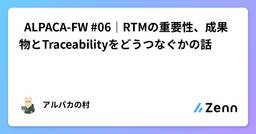
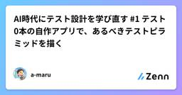
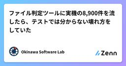
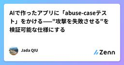
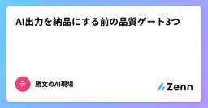
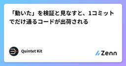

Zennの「Test」のフィード
フィード

Claude Opus 5.5に自作ゲームサイトで72局遊んでもらったら、将棋は全敗だった
Zennの「Test」のフィード
はじめに。フィードバックが目的で各ゲームをCPU対戦、６局（PC３局、SP３局）。Claude Opus 5.5なら、リバーシやチェス、将棋、五目並べくらい全勝するのでは？と思っていましたが、そうではなかったので記事にしました。検証サイトhttps://kirakuken.com 戦績はこちら。戦績を集計してもらいました。 １対１ 1対1のゲーム(42局): 14勝5分23敗ゲームPCスマホ合計〇×2勝1分2勝1分4勝2分0敗ヨット2勝1敗1勝2敗3勝3敗リバーシ1勝2敗1勝2敗2勝4敗五目並べ2勝...
14時間前
レイヤー規約を CI で機械強制する
Zennの「Test」のフィード
チーム開発をしていると、一度は次のような依頼を聞くと思います。「レイヤーの依存方向は守ってね。usecase からプレゼンテーション層を import しないように、気をつけて」こうした「気をつけて」は、守られなかったときに検出する仕組みがないと、少しずつ破られていきます。AI エージェントにコードを書かせることが増えた今は、破られる速度も上がっています。この記事では、個人開発している単語帳サービスのバックエンド（Go / GraphQL）で使っている、規約をレビューの目視ではなくツールで強制する仕組みを、設定ファイルとコマンドを示しながら説明します。 何が「腐る」のかこ...
15時間前

🦙 ALPACA-FW #06｜RTMの重要性、成果物とTraceabilityをどうつなぐかの話
Zennの「Test」のフィード
はじめに前回は、ALPACA-templateの templates/ と projects/ を取り上げました。AIとの会話の中だけに開発状態を残すのではなく、要件・設計・試験などをRepository上の成果物として残し、次の工程や別のAIへ渡せる状態を作る、という話です。ただ、成果物をファイルとして残すだけでは、工程をまたいだ瞬間に別の問題が出てきます。この要件は、どの設計で実現され、どの実装につながり、どの試験で確認されたのかが分からなくなる問題です。そこでALPACA-templateでは、成果物ごとにIDと関係を持たせて、要求から設計、実装、試験、運用までをたどれる...
1日前

「バグがあります。直してください」とだけ頼んだら5回とも1文字も直らなかった。テストを置くとテストの中だけ直った
Zennの「Test」のフィード
同じバグ入りのファイルを4通りの状態で置いて、AI にまったく同じ1文で「バグがあります。直してください」と頼みました。4通り × 各5回 = 20回です(このほかに、別の依頼文で先に回した10回があります。合わせて計30回。後半で触れます)。結果はきれいに分かれました。仕様書もテストも無い状態: 5回ともファイルを1文字も直さなかったテストだけ置いた状態: 5回ともテストが見ている範囲は直り、テストが見ていない仕様は5回とも1つも直らなかった仕様書を置いた状態: 見ていない範囲まで直った(ただし仕様書とテストが両方ある条件では5回中1回だけ例外)やってみるまでは「テスト...
1日前
CIで必要なE2Eテストだけを回す—Jevで実行対象を選んでみた
Zennの「Test」のフィード
こんにちは！ 株式会社モアでエンジニアをしているmoriです！今回は、実行時間がネックでCIに組み込めていなかったE2Eテストを、Jevで必要なものだけ選んで実行するようにした話になります。 はじめに画面から操作して一連の動作確認を行うE2Eテストですが、人力で書くのはとても大変だけど、AIによって書くのがとても簡単になりました。どうせならE2EテストをCIでも回しておきたいですが、ちゃんと回すとなると時間も費用もそこそこかかってくるかと思います。テストを並列化するのにも限度があるし、 並列化前提でテストを書こうとするとけっこう面倒だったりもします。そこで、影響のあるテスト...
1日前

AI時代にテスト設計を学び直す #1 テスト0本の自作アプリで、あるべきテストピラミッドを描く
Zennの「Test」のフィード
1. はじめに — なぜ今テスト設計か何をするにもAIが欠かせない時代になりました。開発の現場でも「AIに何を任せ、その出力をどう検証するか」が問われるようになっています。実際、私自身も普段の開発業務では実装の多くをAIに任せ、「それが正しいかを検証する」立場になっていることを実感します。では、何をどう確かめれば「正しい」と言えるのか——その体系こそがテスト設計です。AIに実装を任せる時代だからこそ、テスト設計が自分の土台になると考え、学び直すことにしました。この連載（全4回）では、テスト設計を学んだ過程と考察をまとめていきます。今回はテスト設計の基礎（テストの原則・テストレベ...
2日前

技術だけでは品質は守れない。「対話」から始めるQAアプローチ
Zennの「Test」のフィード
こんにちは、チームラボでエンジニアをしている畠山です。現在は、QAエンジニアとして主にテスト管理に携わっています。今回は、チームラボでの開発を経験して得られた、品質保証に対する考え方や実体験ベースの気づきをお伝えできればと思います。標準化やテスト技術の壁にぶつかった失敗談を交えつつ、複数のプロジェクトで得られた現場での考え方をシェアできればと思います。 チームラボにおける開発特性と品質のあり方チームラボの開発は、ウォーターフォール形式でありながら、リリース直前まで顧客要望に合わせて仕様が変化する柔軟性を持つことが多いのです。この性質は様々なドメインで良いプロダクトを生...
2日前

ファイル判定ツールに実機の8,900件を流したら、テストでは分からない壊れ方をしていた
Zennの「Test」のフィード
自作のファイル判定ツールには260件の自動テストがあり、手作りのベンチマークは100%でした。それを、自分のPCにもともと入っているファイルに向けたら、C:\Windows\System32 の13ファイルを危険と言い、Tclのメッセージファイル90本を食い違いと言い、ある .ini ファイルで数分間止まりました。どれもテストには出ていませんでした。テストは「自分が想定した形式に見えるように自分で書いたファイル」でできていたからです。本物のWindowsに入っているファイルは、他人が別の理由で書いたもので、こちらの拡張子辞書がどう決めていようと関係ありません。この記事は、それを見つけ...
2日前
モデル選択の「auto」に任せてはいけないのは、合格判定だ
Zennの「Test」のフィード
フォームを実装するときも、READMEの一文を直すときも、モデル選択をautoにする。同じ設定で困らないように見える。でもフォームはビルドが通っても、エラー表示が消えたり、キーボードで送信できなかったりする。一方、文書の修正にそこまでの検証は要らない。両者を分けるのはモデル名ではない。「この仕事は何を満たしたら終わりか」だ。選択を自動化する前に、合格条件を仕事ごとに決めておきたい。 tierは品質保証ではないGitHub Copilotのauto model selectionにはefficiency、balance、intelligenceという選好tierがある。利用可能なモ...
2日前

AIで作ったアプリに「abuse-caseテスト」をかける——"攻撃を失敗させる"を検証可能な仕様にする
Zennの「Test」のフィード
公開直前のアプリに、自分でセキュリティチェックをかけた。E2E テストは全部グリーン。予約できる、キャンセルできる、二重予約は弾かれる。動作は完璧。なのに、穴が見つかった。理由はシンプルだった。私のテストが確かめていたのは「ユーザーが"自分の"データを取れるか」。攻撃者が試すのは「"他人の"データを取れるか」。 同じコード、確かめる方向が逆なだけで、結論がまるっきり変わる。この記事は、その「逆向きのテスト（abuse-case）」を、精神論ではなく手を動かせる手順として書く。 なぜ普通のテストでは見つからないのか普通のテスト（happy path）は「機能が仕様どおり動くか」...
2日前
「カバレッジ100%に到達するまでテスト書いといて」は、なぜダメなのか
Zennの「Test」のフィード
FLINTERSのaraiです。AIエージェントがコードもテストも書いてくれるこの時代。私たちはどこまでAIに任せられるのか、何を任せてはいけないのか。「カバレッジ100%になるようにテスト書いといて」ではなぜ楽にならないのかという疑問を切り口に、改めてカバレッジという指標について考えていきます。 カバレッジとは何かまず一般に「カバレッジ」と呼んでいるものが何を対象としてるのか整理していきます。カバレッジ(coverage) とは、読んで字のごとく対象がどれだけ網羅(cover) されているか、その 網羅率 を表します。もう少し噛み砕いた表現にすると 「テストによって到達...
3日前

[テスト] テスト計画書のテンプレート
Zennの「Test」のフィード
🌱 はじめに2026年8月27日に発売された『QAエンジニア入門 〜チームで品質を高める連携のしかた』（岩崎 駿 著、技術評論社）を読みました。第2章「2.2 テスト計画：目的と作成方法」の記述を参考に、テスト計画書のテンプレートとしてまとめます。https://gihyo.jp/book/2026/978-4-297-15832-3テスト計画をはじめて任されると、何をどこまで書けばよいのかが分かりません。そのまま埋めれば形になるように、Markdown のテンプレートとして用意しました。書くことを決めないままテストを始めると、次のような困り方をしがちです。「それもテ...
3日前
ジュニアエンジニアの AI 協働ロードマップ (4/5) — 検証編：確かめてから取り込み、AI のミスをルールに反映する
Zennの「Test」のフィード
!TL;DR: AI の「直しました」は報告で、確かめた結果ではありません。Claude Code の permissions の deny でテストとルールを守り、差分と CI をコードレビューで確かめてから取り込み、ミスは ESLint のルールに足します。足したルールは、わざと違反させて止まるところまで確かめます。 AI が「直しました」と言った変更は、そのまま取り込んでよいのでしょうか？いいえ。AI の報告ではなく、差分と CI の結果を自分で見てから取り込みます。この回は、全 5 回の連載の 4 回目で、4 つのステップのうちステップ 4「検証してから取り込み、...
3日前

AIソフトウェア工場の設計——要求から本番運用までをつなぐアーキテクチャ 2
2
Zennの「Test」のフィード
人が望む成果を渡したあと、何を根拠に変更を進め、どこで止め、どう結果を確かめるのか。一件のAPI変更を軸に、要求、情報基盤、PCでの実装、PR、ビルド・テスト、AIレビュー、進行判断、デプロイ、運用をつなぐ設計を解説します。合意した条件と対象版を各工程へ引き継ぎ、失敗・欠測・古い結果を扱う方法を、2枚の構成図と全文収録のNode.js教材で確かめます。
3日前
検証は「比べた部分」しか守らない — 書き出しは正しく、プレビューだけが上下逆だった
Zennの「Test」のフィード
360度動画を平面に切り出すツールを作っています。前回の記事では、このツールのプレビューを検証しようとして、ヘッドレス Chrome の仮想時計に騙された話を書きました。今回はその続きです。プレビューが映るようになったあと、画が上下逆のまま数セッション経っていました。そのあいだ、数値検証は全部通っていました。 開いた瞬間に分かったyaw・pitch・roll をすべて 0 にしてプレビューを開くと、画が上下逆に映っていました。同じパラメータで書き出した動画は、正しく直立しています。だからプレビュー固有の問題だと、すぐに切り分けられました。気づくのが遅れたのは、見ていなかった...
3日前

AI出力を納品にする前の品質ゲート3つ
Zennの「Test」のフィード
AIにコードや差分を出させると、見た目はすぐに「できてしまった」感じになります。でも受託では、生成した瞬間の成果物をそのまま納品すると、あとから境界・秘密・再現性で詰まりやすい。この記事では、AI出力を納品物にする前に通す品質ゲートを3つに絞って書きます。特定ツールのカタログ紹介ではなく、現場で短く回せる型の話です。想定読者: 受託・フリーランス寄りのエンジニア／少人数で納品責任を負っている人書かないこと: 未確認の売上数字、過度な自動化自慢、煽り口調 結論（先に）AI出力を納品にする条件は、次の3つを通ったあとです。ゲート① テストか型で緑（機械で再現できる確認...
4日前
読書メモ：ソフトウェアテストをカイゼンする50のアイデア
Zennの「Test」のフィード
表紙には『アジャイル開発の品質を上げるため』と書いてあるが、そこまでアジャイルの文脈に依存していない。全体的に文章が読みづらい。原著のAmazonレビューは好評で、かつ巻末の日本語版独自の章も同様に読みづらかったので、訳者の文章が自分とは合わないと思われる。タイトルにあるように50のアイデアが列挙されていて、抽象度はまちまちだ。章立てによる分類はされているが『テストのアイデアを生み出す』『適切なチェックの設計』『テスト容易性の向上』『大規模なテストスイートの管理』と段階がバラバラだ。良く言えば幅広く、悪く言えば散漫な印象を受ける。ただそれでも好きなアイデアはある。『信頼境界を文書...
4日前
ジュニアエンジニアの AI 協働ロードマップ (2/5) — 集約編：AI に任せる範囲を決める
Zennの「Test」のフィード
!TL;DR: 業務ルールの多くは、値 1 つではなく「複数の値と状態の組み合わせ」で決まります。この回は、それらをひとまとめにし、状態を変える入口を絞った単位（DDD の集約）を TypeScript で作ります。そのうえで、集約の境界を基準に AI に任せる範囲を決めます。集約の境界と守るべき条件はジュニアエンジニア自身が決め、境界の内側の実装とテストの下書きを AI に任せる、という線の引き方を身につけます。 値 1 つでは守れない業務ルールは、誰がどう守るのでしょうか？この回は、全 5 回の連載の 2 回目で、4 つのステップのうちステップ 2「AI に任せる範囲を決...
5日前

「動いた」を検証と見なすと、1コミットでだけ通るコードが出荷される
Zennの「Test」のフィード
有料で配っているスクリプトに、バグを1つ入れたまま出しました。しかも私は、そのバグを「4シナリオで検証済み」と報告していました。検証はしていました。検証したつもりになる形で。 何が壊れていたかgit worktree で作った作業ツリーを、マージ済みなら片付けるスクリプトです。判定の一部に、squash マージの検出が入っていました。# 壊れていた判定cherry="$(git cherry "$base" "$branch")"[ -z "$cherry" ] && return 1printf '%s\n' "$cherry" | grep -q ...
5日前
Agent Evalで難しいのは「何をGreenとするか」を決めること
Zennの「Test」のフィード
!本記事は、dev.toに公開した"The Hard Part of Agent Evals Is Deciding What Counts as Green"を日本語向けに一部再構成したものです。AIエージェントを使ったプロダクトにも、従来のE2Eテストは必要です。UIが表示される、APIが期待どおり動く、権限が守られる、永続化が壊れないといった決定論的なソフトウェアの振る舞いが壊れたなら、決定論的なテストで検出したい。その一方で、エージェントを含むプロダクトでは、実際のモデルと実行環境を動かし、エージェントそのものを評価する「Agent Eval」も必要になります。Anthr...
5日前